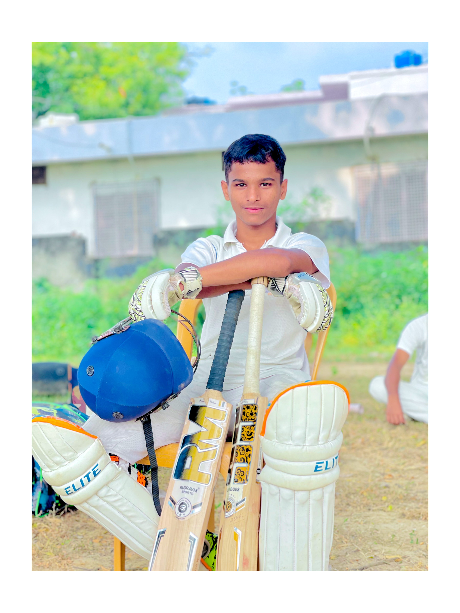
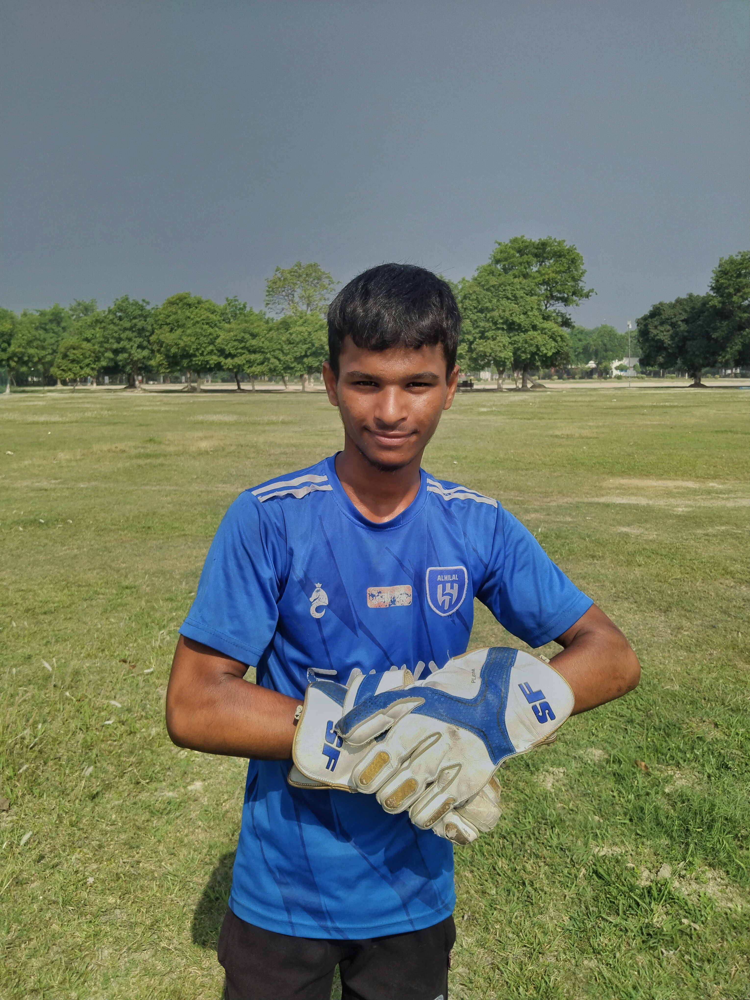
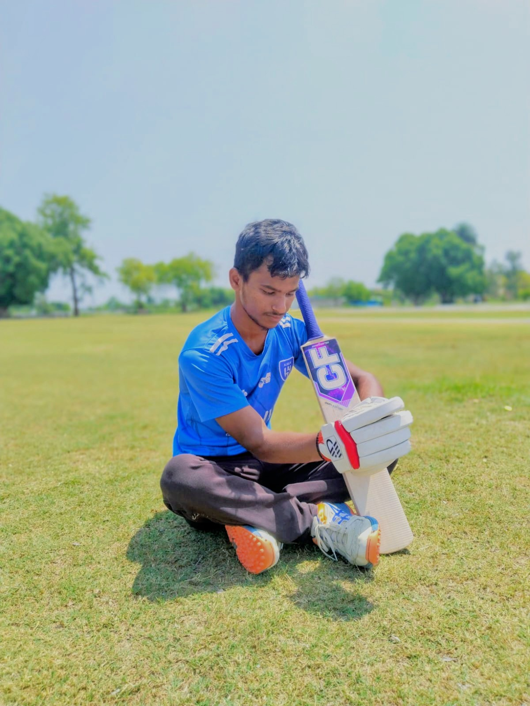

🏏
Colvin Cricket Academy
Academy cricket and player development.
OFFICIAL CRICKET PROFILE
Wicketkeeper-Batter · Right-Hand Batter
Competitive cricketer developing through academy, club and tournament cricket in Uttar Pradesh.

01 · ABOUT

Akarsh Trivedi is a young wicketkeeper-batter and right-hand batter developing his cricket career through competitive cricket in Uttar Pradesh.
His public cricket record includes appearances in academy, club and tournament cricket, including Colvin Cricket Academy, Youth Cricket Club Barabanki and Colvin Premier League competitions.
This website is a central profile. Match statistics should be added only from verified scorecards or official records.
02 · PROFILE
| Statistic | Value | Source |
|---|---|---|
| Matches | 82* | CricHeroes profile |
| Runs | 1,777* | CricHeroes profile |
| Best performances | See verified scorecards | CricHeroes |
| Wicketkeeping | Catches / stumpings recorded | Public scorecards |
*Update these figures whenever your current CricHeroes profile changes. Do not use unverified numbers.
03 · EXPERIENCE
Academy cricket and player development.
Club cricket with batting and wicketkeeping records.
Competitive tournament appearances and match records.
04 · PERFORMANCES
Academy practice match
Personal performance highlight. Add the official scorecard link here if publicly available.
Wicketkeeping records
Public scorecards include catches/stumpings and other fielding involvement.
03 · PHOTOS

07 · CONTACT
For cricket trials, tournaments and genuine cricket-related opportunities, use the contact details provided by Akarsh.
Contact AkarshDo not publish a home address, school details, personal phone number, or other private information on this public website.